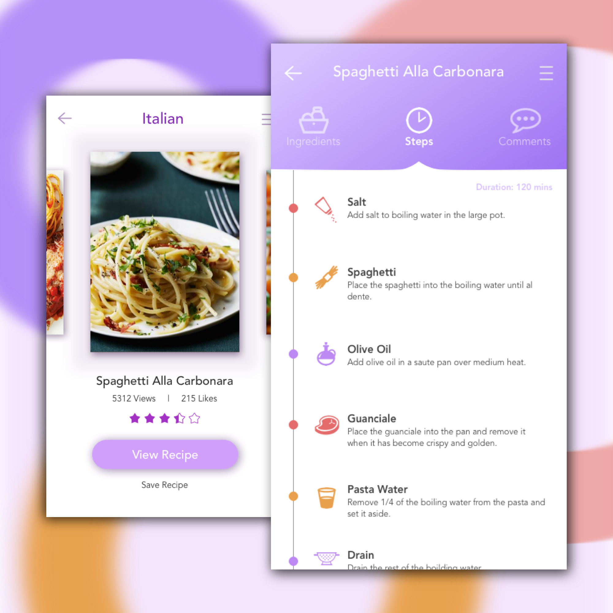
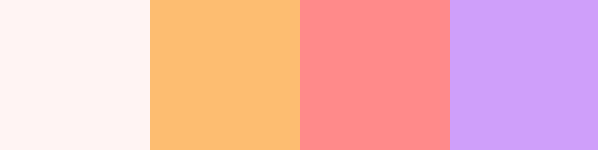

Day 51 - What's For Dinner?
Today I copied a design I had found on Instagram a couple weeks ago. I'm surprised I didn't do this design earlier. As for the recipe, I got it from Mario Batali.
I followed a spring colour palette for this design, and I'm glad I did. It was more suitable for an app like this.
For the Italian recipes page, the main design decision I had to face was: What do users like to see when they look for a recipe. For me, I tend to look at ratings and reviews to determine if the recipe will be good or not. This was solved by adding the number of views, number of likes and the rating from the stars. By clicking on the stars, the user will be taken to a page where other users have reviewed this recipe.
Clicking on the Call-to-Action button located at the bottom of the recipes page would direct the user to the page on the right. This page allows the user to view the ingredients needed, the steps, and the comments from other users. I had a lot of fun finding the appropriate icons for the different steps. One thing I wasn't too sure of was what the bolded text should be for each of the steps. At first, I thought about only stating the ingredients that will be involved at each step, but this would eliminate a lot of steps that would only include actions. So I decided to keep the bolded words for ingredients and action words.
All in all, I had a lot of fun creating this simple, yet colourful design.